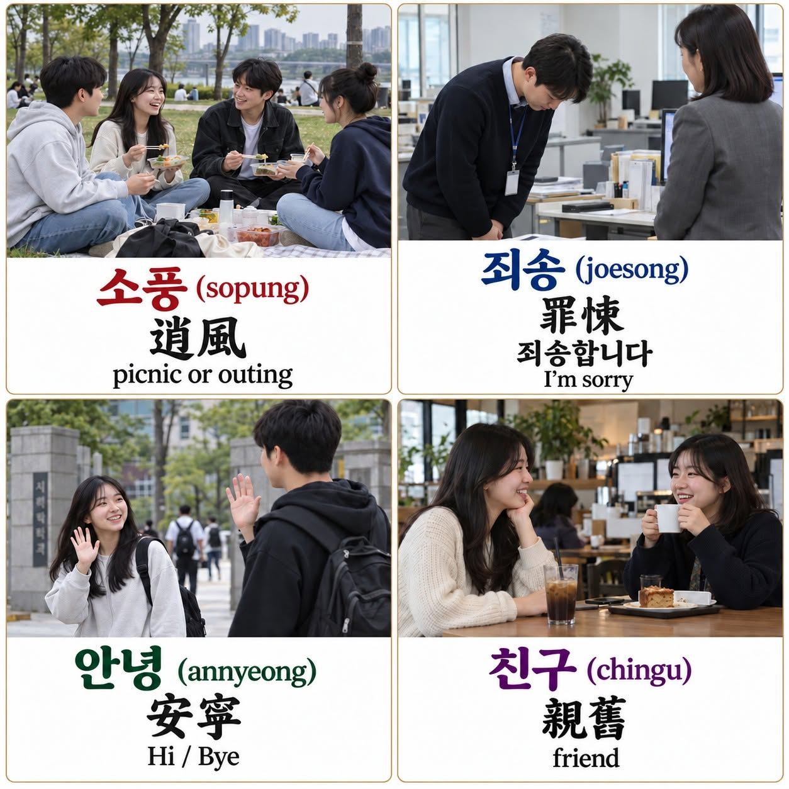
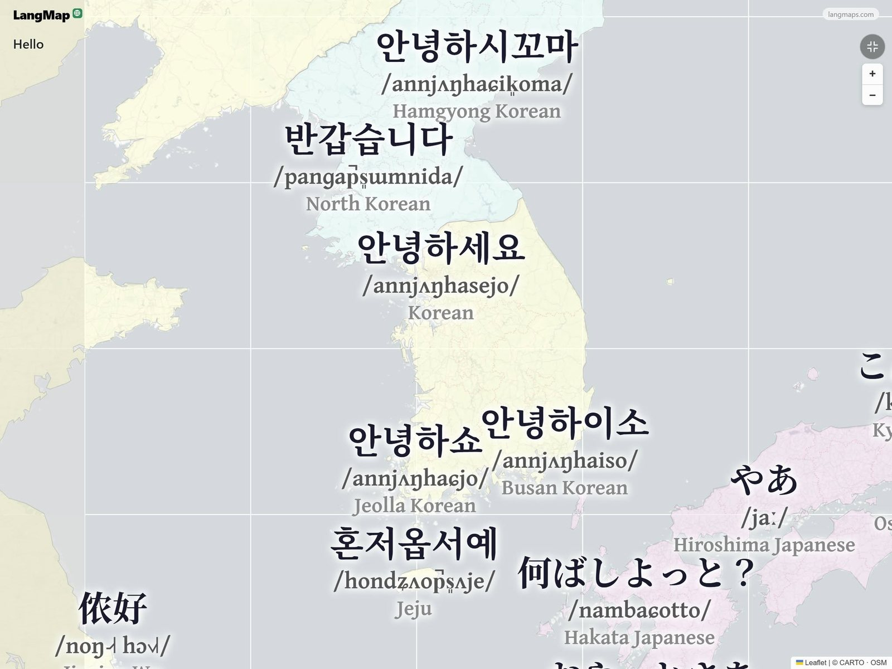

I Know the Characters. But Not That Meaning. Part 1: A Picnic Called 逍風
- A Korean school picnic, 소풍, is written 逍風 in characters.
- Behind everyday Korean words like 죄송, 안녕 and 친구 lie characters that look solemn or literary.
- Recognizing the characters does not always reveal what the speaker means.

A picnic called 逍風
This series looks at words whose characters are familiar across the Sinosphere but whose everyday meanings are not. It begins in Korea.
A Korean child looking forward to a school outing calls it 소풍 (sopung). Write its underlying characters, and it becomes 逍風.
For someone unfamiliar with Korean, those characters might suggest a literary excursion: 逍, familiar from 逍遙, beside 風, "wind." In Korean, however, it is an ordinary word for a picnic or outing, including the school trip for which children pack their lunches.
Most Korean writing today uses Hangul. Restoring the characters behind Sino-Korean words reveals connections that their everyday spelling leaves out of sight.
Guilt, peace and old acquaintances
Consider 죄송 (joesong), the basis of the polite apology 죄송합니다. Its characters are 罪悚: guilt and fear. The written form looks rather solemn beside its everyday function, "I'm sorry."
Or 안녕 (annyeong), written 安寧. Readers of Chinese characters may associate it with peace and tranquillity. Korean speakers also use it as a casual greeting or farewell. A word that can describe the peaceful condition of a country can also pass between two friends meeting on the street.

On the map of "hello," that peace turns up across the peninsula: Seoul's 안녕하세요, Busan's 안녕하이소, Jeolla's 안녕하쇼, Hamgyong's 안녕하시꼬마. Each one is, underneath, a question about whether you are 安寧. Not every row joins in: the map's North Korean entry is 반갑습니다, "pleased to meet you," and Jeju has 혼저옵서예, a word of welcome.
The same peace also says goodbye. 안녕히 가세요 sends off someone who is leaving, and 안녕히 계세요 is said to someone who stays: go in peace, stay in peace.
Those friends are 친구 (chingu), or 親舊. In Chinese, 親舊 is a literary expression for relatives and old acquaintances. In Korean, a friend made yesterday can already be a 친구.
And a wallet is 지갑 (jigap), written 紙匣, literally a paper box, even when it is made of leather.
An entirely ordinary afternoon
These words have different histories. Some preserve older vocabulary; others developed meanings particular to Korean. They share one useful lesson: recognizing the characters does not always reveal what the speaker means.
逍風, 親舊, 安寧
On the page, they might resemble the vocabulary of an old literary gathering.
In Korean, they belong to an entirely ordinary afternoon.